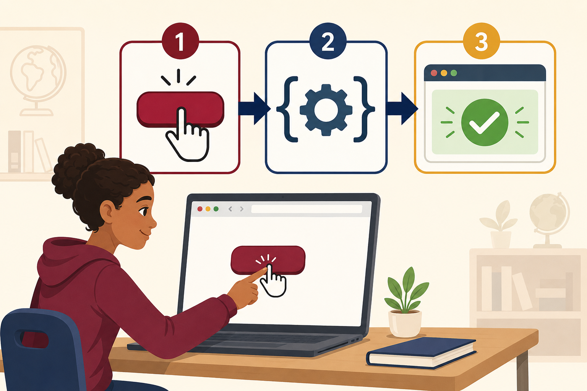
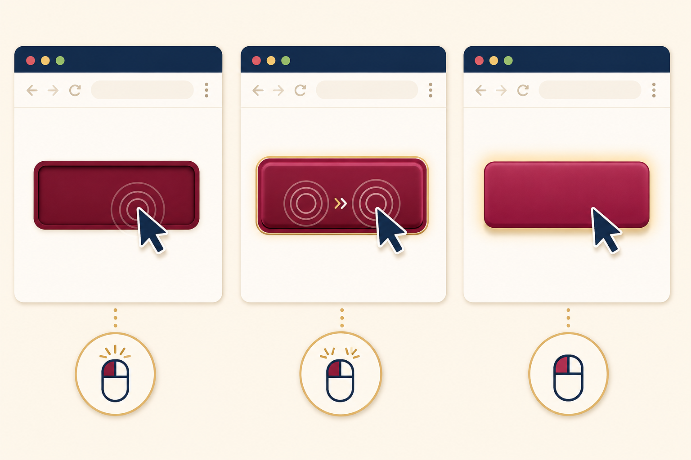
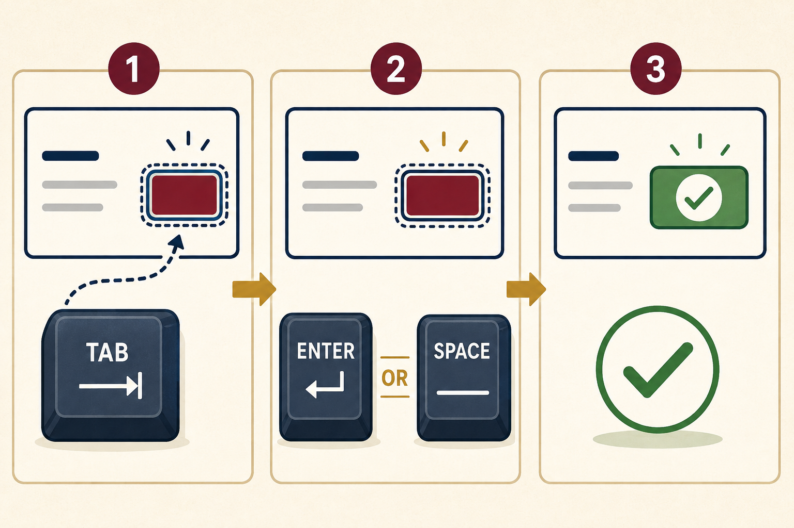

Define an event
Describe an event as an action or occurrence that the browser can detect.
Lesson 01 · JavaScript Fundamentals
Learn how a webpage detects a user action, runs JavaScript instructions, and displays a clear response. This module uses guided examples, live demonstrations, and short activities.

01 · Lesson Overview
By the end of the lesson, you should be able to explain button events, connect a button to JavaScript, use the event object, and build an accessible interaction.
Describe an event as an action or occurrence that the browser can detect.
Use addEventListener() to connect a button to a function.
Read useful information from the event object, such as the event type and target.
Create controls that work with a mouse, touch screen, and keyboard.
02 · Core Concepts
A button event follows a simple sequence. The browser waits for an action, identifies the element, and calls the function assigned to that event.
The learner clicks, taps, presses Enter, or presses the Space bar.
JavaScript listens for the named event on the selected button.
The handler runs and changes text, color, data, or another part of the page.
The HTML element that receives or starts the event. In this lesson, the target is usually a <button>.
A JavaScript instruction that waits for a specific event, such as click.
The function that runs after the event occurs. It contains the action the webpage must perform.
Recommended Method
Inline event attributes can work for very small examples, but addEventListener() is clearer, easier to maintain, and allows multiple handlers.
<button id="saveButton" type="button">
Save Record
</button>const saveButton = document.querySelector('#saveButton');
saveButton.addEventListener('click', function () {
alert('Record saved successfully.');
});03 · Guided Demonstrations
Read the steps, review the code, and then use the live button to observe the result.
Demonstration A
Give it a unique id so JavaScript can select it.
Use document.querySelector() with its ID selector.
Pass 'click' and a handler function to addEventListener().
Change the message by assigning a new value to textContent.
const helloButton = document.querySelector('#helloButton');
const helloMessage = document.querySelector('#helloMessage');
helloButton.addEventListener('click', function () {
helloMessage.textContent = 'Excellent! The click event worked.';
});Live result
Demonstration B
A variable can remember a value between clicks. Each event increases the count by one.
Create let count = 0.
Use count += 1 inside the handler.
Use a template literal to show the latest count.
let count = 0;
countButton.addEventListener('click', function () {
count += 1;
countOutput.textContent = `Total clicks: ${count}`;
});Live result
Total clicks: 0
04 · Event Types
JavaScript can respond to several pointer actions. Select the event that best matches the intended interaction.

| Event | When it occurs | Common use |
|---|---|---|
click | One activation | Submit, open, save, or select |
dblclick | Two quick clicks | Special secondary action |
pointerenter | Pointer enters an element | Preview or helper information |
pointerleave | Pointer exits an element | Remove a preview |
pointerdown | Pointer is pressed | Start a press or drag action |
pointerup | Pointer is released | Complete a press or drag action |
Do not place an essential action only on hover or double-click. Touch-screen and keyboard users may not discover or activate it easily.
05 · The Event Object
The handler can receive an event object. This object describes what happened and which element was involved.
detailsButton.addEventListener('click', function (event) {
eventOutput.textContent =
`Event type: ${event.type}`;
});event.typeThe name of the event, such as click.
event.targetThe deepest element that started the event.
event.currentTargetThe element whose listener is currently running.
event.preventDefault()Stops the browser’s normal action when appropriate.
Inspect a live event
06 · Accessibility and Good Practice
A professional button must work for learners using a mouse, touch screen, or keyboard and should always provide visible feedback.

<button> for button actions.type="button" when the control should not submit a form.aria-live for important dynamic messages.07 · Guided Practice
Use the controls below and observe how each event changes the page.
Practice 1
Click the button to add or remove an active CSS class.
Practice 2
Move the pointer into and out of the area. On touch devices, tap it.
Waiting for a pointer event.
Practice 3
Activate the button twice quickly to run the dblclick handler.
Waiting for two clicks.
Independent Activity
Create a button that adds and removes a class on the page. Update the button’s aria-pressed value whenever the state changes.
click listener.classList.toggle().08 · Knowledge Check
Answer each question before opening the suggested response.
An event is an action or occurrence that the browser detects, such as a click, key press, form submission, or pointer movement.
addEventListener()?It connects an event on a selected element to a function that should run when the event occurs.
The listener waits for the event. The handler is the function that performs the response.
event.currentTarget provide?It refers to the element whose event listener is currently executing.
A native button provides keyboard support and proper meaning to assistive technologies without extra custom code.
09 · Lesson Summary
A button event begins with a user action, passes through an event listener, and runs a handler. Use addEventListener(), provide visible feedback, and test every control with both pointer and keyboard input.